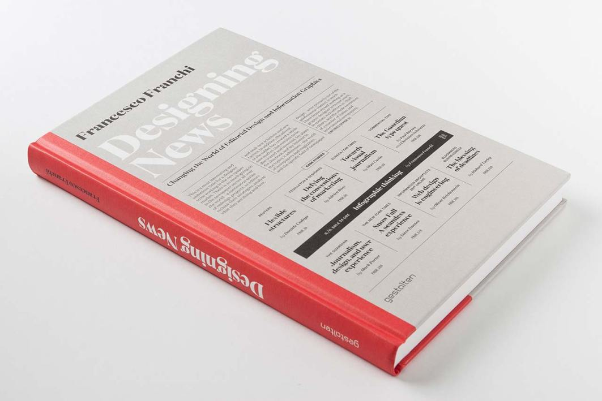
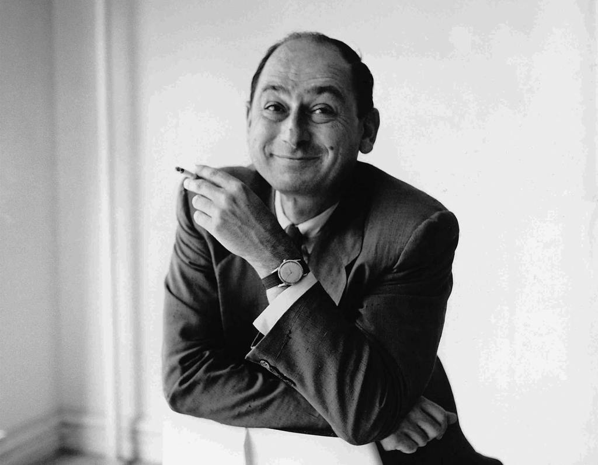

Philosophy of design is the study of assumptions, foundations, and implications of design. The field is defined by an interest in a set of problems, or an interest in central or foundational concerns in design.
Philosophy of design is the study of assumptions, foundations, and implications of design. The field is defined by an interest in a set of problems, or an interest in central or foundational concerns in design. In addition to these central problems for design as a whole, many philosophers of design consider these problems as they apply to particular disciplines (e.g. philosophy of art). Although most practitioners are philosophers, several prominent designers and artists have contributed to the field. Graphic design has seen many changes and influences. But foundations remain the same. Society heavily pressures graphic design to assimilate to the era. The history or foundation for graphic design has influence from what was depicted to the author during that time. The foundation of letters, that can be designed specifically for communication.

The History
The field needs more depth, in a sense graphic design needs to find itself, all while evolving at the same time. It’s debatable how the background of graphic design needs to be shared. There’s the discussion of different designers, and their notable works. Portrayals of how the physical art has changed and been inspired by past all while embracing the future.
Philosophy of design is the study of assumptions, foundations, and implications of design. The field is defined by an interest in a set of problems, or an interest in central or foundational concerns in design.
Graphic Design as a field is young. There is not enough information about how it came to be. There is subtle information about society accepting messages being put in front of them. There’s not enough information given to design students about where the concept for graphic design comes from, or at least an understanding about the original forms of communications that used more than words, or why typography has such a large impact.

Herman Miller’s Design Philosophy
In the 1948 Herman Miller sales catalog, George Nelson laid out his view of the company’s design philosophy. These five simple statements echoed the education that Gilbert Rohde had provided for the company in the preceding decades.
- What you make is important.
- Design is an integral part of the business.
- The product must be honest.
- You decide what you will make.
- There is a market for good design.
This simple set of statements has defined a company’s product philosophy for many, many years. It’s no coincidence that Herman Miller has remained a contemporary, sustainable, design-driven business.